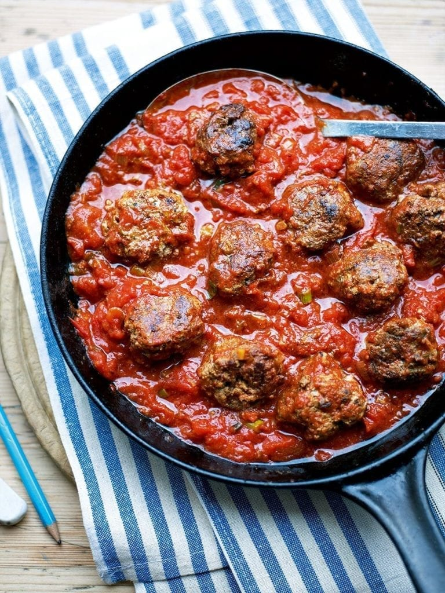

Delicious meatballs

The ingredients
- 2 tbsp olive oil
- 2 spring onions, finely chopped
- 400g beef mince
- 1 medium free-range egg
- Handful plain flour, for dusting
The recipe
- Put 1 tbsp of the oil into a pan, add the spring onion and cook for about 5 minutes until soft. Remove from the heat and set aside to cool.
- Put the beef mince and half the onion into a large bowl. In a small bowl, lightly whisk the egg with a fork, then add to the meat and onion. Season and mix everything together with your hands – you can use a fork but it is more fun using your hands.
- Divide the mixture evenly into 8 balls. Sprinkle the flour onto a plate, then roll each meatball in the flour. Chill for 10 minutes.
- Heat the remaining oil in a frying pan, add the meatballs and cook for 5 minutes without moving them. Using tongs, carefully turn them over and cook for another 5 minutes.
- Mix the tomatoes, cumin and tomato purée and remaining spring onion together, then add to the pan. Cover and cook gently for 25 minutes until the meatballs are cooked
Enjoy!